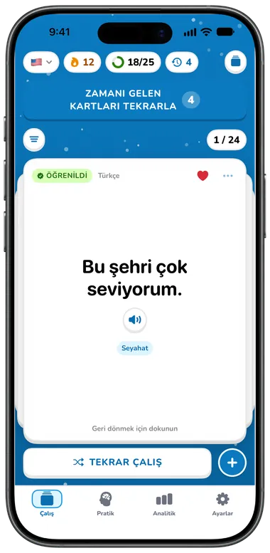
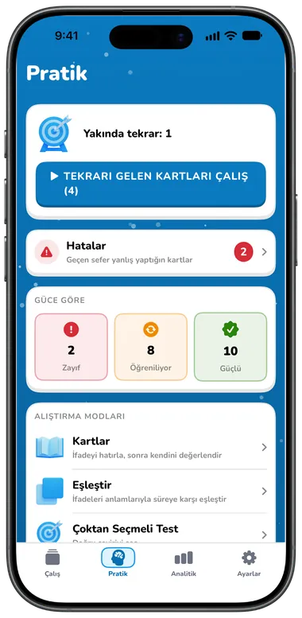
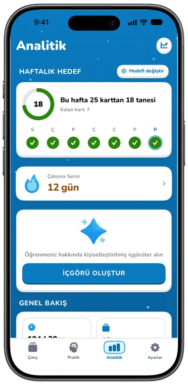

Özellikler
Konuşmak için gereken her şey
Dinleyebileceğiniz kartlar, tekrarı eğlenceli hale getiren oyunlar ve kelimeleri sesli söyleten pratik. Ücretsiz başlayın, daha fazlasını istediğinizde Premium’a geçin.

Saniyeler içinde başlayın
Dillerinizi, seviyenizi, hedefinizi ve ilgi alanlarınızı seçin; Flippin ilk destenizi sizin için hazırlasın.
- İlgi alanlarınıza göre hazır ifade koleksiyonlarından bir başlangıç paketi, desteniz hiç boş kalmaz
- Kurulum sırasında üç gerçek kartı deneyin: çevirin, dinleyin ve Tekrar ya da Biliyorum olarak işaretleyin
- Hesap gerekmez; Apple ile giriş yapmak isteğe bağlıdır


Kartları hızla oluşturun
Bir kelime ya da ifade yazın, çeviri bir an sonra kendiliğinden dolsun. İsterseniz düzenleyin; değişiklikleriniz korunur.
- Dil yüklüyse Apple’ın cihaz üzerindeki çevirisi, değilse Google
- Tek dokunuşla dilleri değiştirip iki dilde de yazın
- Her kartta notlar, en fazla beş etiket ve favoriler
- Pexels’tan kart görselleri ve yazdığınız ya da AI’ın önerdiği emojiler Premium


Her kelimeyi duyun
Kartın iki yüzünde, her listede ya da pratik sırasında hoparlöre dokunun.
- Ücretsiz Google sesleri (dokuz İngilizce aksan) ve çevrimdışı da çalışan sistem sesleri
- 0,5× ile 2× arasında ayarlanabilir hız
- Filtreler, ön dinleme ve dile göre önerilerle yaklaşık 1.000 doğal Speechify sesi Premium


Çevir, kaydır, çalış
Desteniz 3D kağıt kartlardan bir yığın. Çevirmek için dokunun, sonrakine geçmek için kaydırın, yeniden çalışmak için karıştırın.
- Her kart Yeni, Öğreniliyor ya da Öğrenildi durumunu gösterir
- Favorilere, zor kartlara ya da etikete göre filtreleyin
- Öğrenme Modu önce yeni dili, Yolcu Modu önce kendi dilinizi gösterir
- Emoji Modu kartın arkasına çeviri yerine emoji koyar Premium

Yedi pratik yöntemi
Pratik, ihtiyacı olan kartları seçer: önce zamanı gelenler, sonra hatalar, sonra yeniler. Ya da hatalarınızla veya zayıf, öğrenilen ya da güçlü kartlarınızla pratik yapın.


| Mod | Ne yaparsınız | Plan |
|---|---|---|
| Kartlar | Anlamını hatırlayın, cevabı görün, sonra Tekrar ya da Biliyorum (veya kaydırın) | Ücretsiz |
| Eşleştir | İki sütundaki altı çifti zamana karşı eşleştirin | Ücretsiz |
| Çoktan seçmeli | Dört seçenek arasından doğru çeviriyi seçin | Premium |
| Boşluk doldurma | Altında anlamı gösterilen cümleyi tamamlayın | Premium |
| Dinle | İfadeyi dinleyin (tekrar ya da yavaş çalın) ve anlamını seçin | Premium |
| Yaz | İfadeyi yazın; aksan işaretlerindeki ya da noktalamadaki küçük hatalar neredeyse doğru sayılır | Premium |
| Konuş | Basılı tutup söyleyin; konuşma tanıma kontrol eder, gerekirse yazabilirsiniz | Premium |
Her oturum bir özetle biter: doğru cevaplar, doğruluk, süre, yakında tekrar zamanı gelecek kartlar ve haftalık hedefiniz. Bilemediğiniz kartlar birkaç kart sonra yeniden gelir; her cevap kartın ustalık düzeyini günceller ve bir sonraki tekrarını planlar.
Seriler & hedefler
Küçük günlük kazanımlar, tek bakışta.
- Aylık takvimli çalışma serisi, en iyi seriniz ve sonraki hedef (7, 30, 100, 365 gün)
- Haftanın her günü için bir halkayla 10, 25, 50 ya da 100 kartlık haftalık hedef
- Seçtiğiniz saatlerde günlük çalışma hatırlatıcısı ve zor kart hatırlatıcısı


İlerlemenizi görün
Ücretsiz: seriniz, haftalık hedefiniz, toplam çalışma süreniz, bugün çalışılan kartlar ve oturumlar ve tüm zamanların doğruluk oranı.
- Haftalık, aylık ya da yıllık çalışma süresi grafikleri Premium
- Ustalık dağılımı, doğruluk eğilimleri, kilometre taşları ve rozetler Premium
- Haftanıza göre günlük öneri ve tavsiyeler veren AI Öğrenme Koçu Premium


AI ifade setleri
Ne öğrenmek istediğinizi tarif edin, 10, 15 ya da 20 kart seçin ve dil çiftinize ve seviyenize uygun, çalışmaya hazır bir koleksiyon alın.
- Düzenlemek için herhangi bir karta dokunun, hangilerini ekleyeceğinizi seçin, yeniden oluşturun ya da isteği düzenleyin
- Son 20 sonucunuz taslak olarak saklanır, çevrimdışı da
- Ücretsiz kullanıcılar yükseltmeden önce örnek bir sete göz atabilir
Premium AI özellikleri Premium ve Apple ile giriş gerektirir. AI ile oluşturulan içerik hata içerebilir.


30 ifade koleksiyonu
Her dilde 11 konuda 168 faydalı ifade: temel, seyahat, sosyal, yaşam tarzı, yemek, acil durum, alışveriş, hava durumu, teknoloji, iş ve eğlence.
- Her koleksiyonu önizleyin ve istediğiniz kartları seçin
- Her konudan bir koleksiyon ücretsiz (toplam 11) Ücretsiz
- 30 koleksiyonun tamamı Premium


Ve ayrıntılar

iCloud eşzamanlama
Kartlar, etiketler ve pratik geçmişi, hesaplı ya da hesapsız, kendi iCloud’unuz üzerinden iPhone ve iPad arasında eşzamanlanır.

İsteğe bağlı hesap
Apple ile giriş yapmak profilinizi, serinizi ve aboneliğinizi cihazlar arasında eşzamanlar. Çıkış yapsanız da kartlarınız kalır.
Açık ve koyu
Gündüz parlak bir gökyüzü, koyu modda yıldızlı bir gece; sisteminize ya da tercihinize göre.
34 uygulama dili
Uygulama da sizin dilinizi konuşur; Arapça ve İbranice için sağdan sola düzen dahil.
Ücretsiz ve Premium
Ücretsiz plan tek dil çiftinde 40 karta kadar içerir. Premium sınırları kaldırır ve yukarıda Premium olarak işaretlenen her şeyi ekler.
Premium $5.99/ay, $39.99/yıl (yıllık planda uygun yeni aboneler için 7 günlük ücretsiz deneme ile) ya da ömür boyu erişim için tek seferlik $99.99’dur. Fiyatlar USD cinsindendir ve ülkeye veya bölgeye göre değişir; App Store satın almadan önce size fiyatınızı gösterir. Kullanım Koşulları’na bakın.
Uygulamaları mı karşılaştırıyorsunuz? Flippin mi Anki mi yazısını okuyun.

Bugün konuşmaya başlayın
Flippin’i ücretsiz indirin, dillerinizi seçin; ilk ifadeleriniz pratiğe hazır.
iPhone ve iPad için · iOS 18 veya üstü